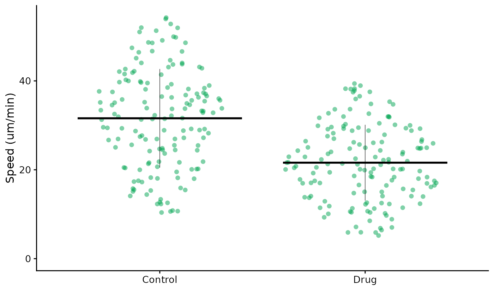

Making non-SuperPlots - FlatPlots
SuperPlotR is designed to make SuperPlots, but sometimes you just want a simple plot. This vignette will show you how to make a “FlatPlot” using SuperPlotR.
In contrast to SuperPlots, which emphasise the experimental replicates, FlatPlots have a flat structure, where the replicates are not shown. They can be used to look at data from a single experiment, or when the replicates are the individual data points.
library(SuperPlotR)
flatplot(lord_jcb, "Speed", "Treatment", ylab = "Speed (um/min)")Many of the arguments are the same as for superplot(),
but the replicate argument is not used.
flatplot(lord_jcb, "Speed", "Treatment", ylab = "Speed (um/min)",
colour = "rl_green")
The control of colour is by a single colour, which can be a hex code or one of our lab’s publication colour palette.
flatplot(lord_jcb, "Speed", "Treatment", ylab = "Speed (um/min)",
colour = "rl_red", stats = TRUE)
#> Performing t-test
#>
#> Welch Two Sample t-test
#>
#> data: x and y
#> t = 8.7438, df = 279.51, p-value < 2.2e-16
#> alternative hypothesis: true difference in means is not equal to 0
#> 95 percent confidence interval:
#> 7.738602 12.235350
#> sample estimates:
#> mean of x mean of y
#> 31.58355 21.59657
We can request statistical testing as for SuperPlots, but the p-values will be calculated for the whole dataset, not for each replicate.
flatplot(lord_jcb, "Speed", "Treatment", ylab = "Speed (um/min)",
colour = "rl_red", size = 4, alpha = 0.25,
bars = "mean_ci")In this example, we have increased the size of the points, made them slightly more transparent, and added error bars to show the mean and 95% confidence interval.